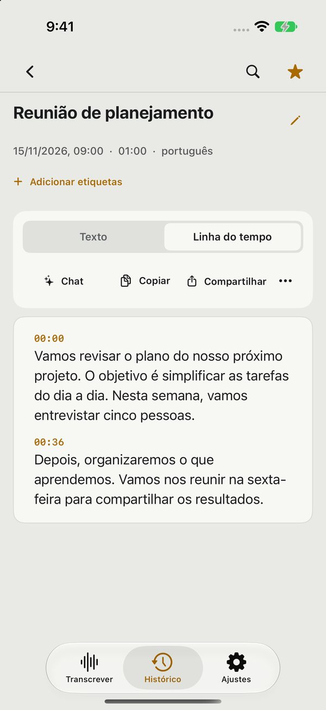
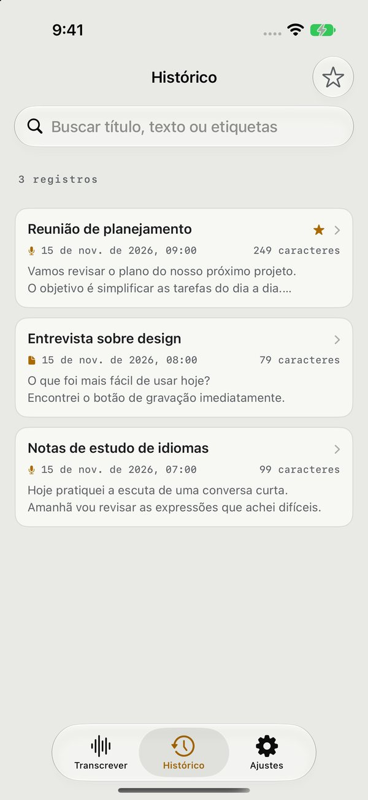
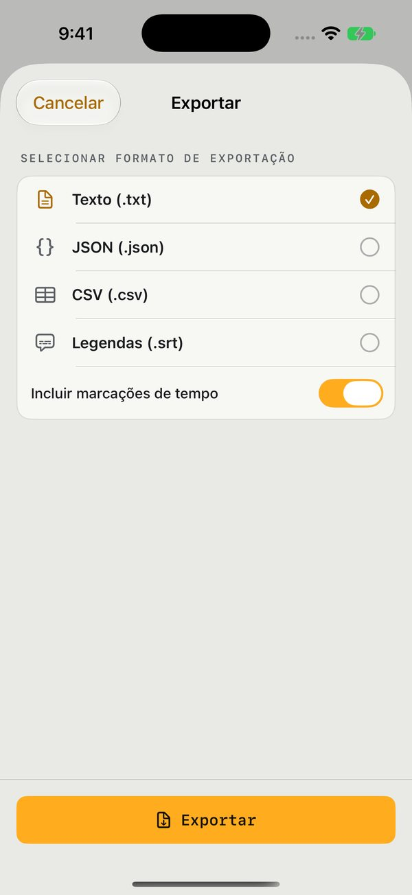

Sua voz,transformada em texto.
Grave uma reunião, uma aula ou uma entrevista — ou importe um arquivo de áudio ou vídeo — e receba a transcrição no seu iPhone ou iPad.
Transcreva em tempo real durante a gravação em dispositivos compatíveis com iOS 26 ou posterior. Com o Apple Intelligence ativado, peça um resumo por IA no chat da transcrição.
- Todos os recursos grátis
- Sem anúncios
- Sem compras dentro do app
- Sem conta
- iPhone e iPad
Todos os recursos, grátis.
Não existe plano pago. Tudo o que está nesta página — gravação, importação de arquivos, todos os modelos Whisper, exportações, histórico, etiquetas, chat com Apple Intelligence e Atalhos — está disponível sem custo. Você não precisa criar uma conta, e o app não exibe anúncios.
- Sem assinatura nem compra única
- Sem compras dentro do app nem recursos bloqueados
- Sem anúncios e sem rastreamento de terceiros
- Sem cadastro ou login
- O app não define limite de duração da gravação nem de quantidade de arquivos — o armazenamento, a memória e a bateria do dispositivo continuam valendo
Do áudio à transcrição
Grave ou importe
Toque para gravar com o microfone ou selecione um arquivo de áudio ou vídeo no app Arquivos ou em Fotos. É possível pausar e retomar durante a gravação.
Leia, edite e exporte
Revise o texto com marcações de tempo, corrija eventuais erros e compartilhe como TXT, CSV, JSON ou legendas SRT.
O que você pode fazer com ele
Uma visão mais detalhada das principais partes do app.
Grave ou use seus próprios arquivos
Comece uma gravação com um toque ou importe algo que você já tem. O app converte o áudio e o transcreve no dispositivo.
- Gravação pelo microfone com pausa e retomada, e seletor de microfone para microfones externos
- Status da gravação na Tela Bloqueada e na Dynamic Island por meio de uma Atividade ao Vivo (em iPhones compatíveis)
- Importe áudio e vídeo, como M4A, WAV, MP3, MP4 e MOV, do app Arquivos
- Escolha um vídeo diretamente da sua fototeca
- “Manter tela ligada” opcional para sessões longas
Whisper rodando no seu dispositivo
O app usa os modelos Whisper abertos da OpenAI por meio do whisper.cpp, com aceleração de GPU Metal quando disponível. Você pode trocar velocidade por precisão escolhendo outro modelo.
- 10 modelos Whisper, do Tiny (cerca de 15 MB) ao Large v3 Turbo e Medium (até cerca de 1,5 GB)
- Detecção automática de idioma ou escolha entre 18 idiomas
- Tradução opcional do resultado para inglês
- Download opcional do codificador Core ML, que pode acelerar o processamento em dispositivos compatíveis
- No iOS 26 ou mais recente, o mecanismo de fala da Apple no dispositivo também está disponível como alternativa

Linha do tempo ou modo de leitura
Alterne entre uma visualização de texto limpa e uma linha do tempo com marcações de tempo. Reproduza o áudio original para conferir o que foi dito e corrija o texto quando necessário.
- Visualizações de texto e de linha do tempo, com marcações de tempo opcionais
- Reprodução de áudio com velocidade e posição ajustáveis
- Edição da transcrição e do título
- Cópia de um parágrafo ou do texto inteiro
- Busca dentro de uma transcrição

Um histórico pesquisável
Todas as transcrições ficam salvas no seu dispositivo para você consultá-las depois.
- Busca por título, texto ou etiqueta
- Favoritos e ordenação
- Etiquetas que você pode adicionar, renomear, mesclar e excluir em todas as transcrições
- Filtro do histórico por etiqueta

Texto, dados ou legendas
Compartilhe uma transcrição no formato que combina com o próximo passo: anotações, planilha, roteiro ou editor de vídeo.
- TXT para anotações e documentos
- CSV para planilhas
- JSON com segmentos para suas próprias ferramentas
- Legendas SRT para edição de vídeo
- Compartilhamento da gravação original como arquivo de áudio
Pergunte sobre uma transcrição iOS 26+
Em dispositivos compatíveis com o Apple Intelligence, você pode conversar sobre uma transcrição — pedir um resumo, as principais decisões ou itens de ação — e gerar um título. As conversas ficam salvas por transcrição. Transcrições longas são lidas em seções. Um modo opcional de Private Cloud Compute (iOS 27 ou mais recente) vem desativado por padrão.
Atalhos e Siri
Use os Atalhos do app para iniciar ou parar uma gravação, transcrever um arquivo de mídia, encontrar transcrições, obter o texto de uma transcrição ou adicionar etiquetas e favoritos — útil para automações. Algumas ações exigem uma versão mais recente do iOS.
Todos os recursos — todos grátis
Uma lista completa do que o app oferece atualmente. Nada aqui exige compra.
Captura
- Gravação pelo microfoneGRÁTIS
- Pausa e retomada da gravaçãoA gravação também lida com interrupções, como ligaçõesGRÁTIS
- Troca de microfoneGRÁTIS
- Atividade ao Vivo durante a gravaçãoTela Bloqueada e Dynamic IslandGRÁTIS
- Importação de arquivos de áudioM4A, WAV, MP3 e outros formatos comunsGRÁTIS
- Importação de arquivos de vídeoMP4, MOV e outros formatos comunsGRÁTIS
- Importação de vídeo do app FotosGRÁTIS
- Transcrição ao vivoO texto aparece enquanto você fala · iOS 26+GRÁTIS
Reconhecimento de fala
- Whisper no dispositivo (whisper.cpp)GRÁTIS
- Todos os 10 modelos WhisperTiny, Base, Small, Medium, Large v3 Turbo e variantes compactasGRÁTIS
- Mecanismo de fala da Apple no dispositivoiOS 26+, idiomas gerenciados pelo iOSGRÁTIS
- Detecção automática ou escolha entre 18 idiomasGRÁTIS
- Tradução para inglêsGRÁTIS
- Aceleração por GPU MetalQuando o dispositivo é compatívelGRÁTIS
- Codificador Core ML (download opcional)GRÁTIS
Ferramentas de precisão e desempenho
- Pular trechos silenciososDetecção de atividade de voz (VAD)GRÁTIS
- Limpeza do áudioRedução de ruído e normalização de volumeGRÁTIS
- Dicas de vocabulárioNomes e termos que o modelo deve esperarGRÁTIS
- Flash AttentionPode reduzir o uso de memória e acelerar o processamentoGRÁTIS
- Inclusão de marcações de tempoGRÁTIS
Leitura e edição
- Visualização de texto e de linha do tempoGRÁTIS
- Reprodução de áudio com controle de velocidadeGRÁTIS
- Edição do texto e do título da transcriçãoGRÁTIS
- Cópia de parágrafo ou do texto completoGRÁTIS
- Busca dentro de uma transcriçãoGRÁTIS
Histórico e organização
- Histórico de transcrições salvoGRÁTIS
- Busca por título, texto ou etiquetaGRÁTIS
- Favoritos e ordenaçãoGRÁTIS
- Etiquetas: adicionar, renomear, mesclar e excluirGRÁTIS
- Filtro por etiquetaGRÁTIS
Exportação e compartilhamento
- Texto (.txt)GRÁTIS
- CSV (.csv)GRÁTIS
- JSON (.json)GRÁTIS
- Legendas (.srt)GRÁTIS
- Compartilhamento do áudio originalGRÁTIS
- Compartilhamento de texto pela folha de compartilhamentoGRÁTIS
Apple Intelligence
- Conversa sobre uma transcriçãoiOS 26+ em dispositivos compatíveisGRÁTIS
- Histórico de conversas salvo por transcriçãoGRÁTIS
- Geração de títuloGRÁTIS
- Modo Private Cloud ComputeOpcional · iOS 27+ · desativado por padrãoGRÁTIS
Automação e app
- Ações de Atalhos e SiriGRÁTIS
- Layouts para iPhone e iPadGRÁTIS
- Aparência clara, escura ou do sistemaGRÁTIS
- Interface em 11 idiomasGRÁTIS
- Gerenciamento de modelos e armazenamentoGRÁTIS
Os recursos indicados com uma versão do iOS exigem essa versão ou mais recente. Os recursos do Apple Intelligence também dependem da compatibilidade do dispositivo, da região e das configurações de idioma.
Feito para manter seu áudio no seu dispositivo
A transcrição com Whisper roda localmente. O app não inclui anúncios, SDKs de análise nem rastreamento de terceiros, e não envia seu áudio ou suas transcrições ao desenvolvedor.
Fica no seu dispositivo
Gravações, mídias importadas, transcrições, etiquetas, conversas e ajustes ficam armazenados no app, no seu dispositivo. Você pode excluí-los no app a qualquer momento.
Quando o app se conecta
Para baixar os arquivos de modelo Whisper, VAD e Core ML do Hugging Face; para verificar na App Store se há uma versão mais recente; e quando o iOS baixa modelos de fala para o mecanismo da Apple.
A escolha é sua
O Private Cloud Compute para o Apple Intelligence vem desativado por padrão. Se você o ativar, o texto da transcrição e sua pergunta são processados pelo Private Cloud Compute da Apple. Ao compartilhar uma exportação, ela é enviada para onde você escolher.
Antes de começar
Dispositivo e sistema
iPhone ou iPad com iOS / iPadOS 17.0 ou mais recente. A Transcrição ao vivo, o mecanismo de fala da Apple e o Apple Intelligence no dispositivo exigem iOS 26 ou mais recente; o Private Cloud Compute exige iOS 27 ou mais recente.
Armazenamento e rede
Uma conexão com a internet e espaço livre são necessários para baixar um modelo (cerca de 15 MB a 1,5 GB, dependendo do modelo). A permissão de microfone é necessária para gravar.
Perguntas frequentes
O app é realmente grátis?
Sim. No momento, todos os recursos são gratuitos. Não há anúncios, compras dentro do app, assinaturas nem cadastro de conta.
Funciona offline?
A transcrição com Whisper é projetada para rodar no seu dispositivo. Você precisa de conexão com a internet uma vez para baixar um modelo; depois disso, gravar e transcrever com esse modelo geralmente pode ser feito sem conexão. Baixar outros modelos, verificar atualizações e o modo opcional Private Cloud Compute precisam de conexão.
Meu áudio é enviado para algum servidor?
A transcrição com Whisper roda localmente e o app não envia áudio ou transcrições ao desenvolvedor. A única exceção, que você controla, é o modo opcional Private Cloud Compute para conversas com Apple Intelligence, que envia o texto da transcrição e sua pergunta ao Private Cloud Compute da Apple. Esse modo vem desativado por padrão.
Quais arquivos posso importar e exportar?
Você pode importar formatos de áudio e vídeo comuns, como M4A, WAV, MP3, MP4 e MOV, do app Arquivos, além de vídeos do Fotos. As transcrições podem ser exportadas como TXT, CSV, JSON ou SRT, e as gravações podem ser compartilhadas como arquivos de áudio.
Quais idiomas são compatíveis?
Para transcrever, você pode usar a detecção automática ou escolher inglês, japonês, chinês, coreano, espanhol, francês, alemão, italiano, português, russo, árabe, hindi, holandês, polonês, turco, vietnamita, tailandês ou indonésio. Os resultados podem variar conforme o idioma. A interface do app está disponível em 11 idiomas.
Dá para criar legendas para um vídeo?
Sim. Importe um vídeo, transcreva e exporte como SRT. A maioria dos editores de vídeo consegue importar arquivos SRT. O sincronismo das legendas segue os segmentos reconhecidos, então talvez você queira ajustá-lo no seu editor.
Quanto tempo pode durar uma gravação?
O app não define um limite fixo. Na prática, áudios muito longos dependem do espaço livre, da memória e da bateria do seu dispositivo, e modelos maiores levam mais tempo. Se um arquivo longo falhar, um modelo menor ou o Flash Attention podem ajudar.
Este é um app oficial da OpenAI?
Não. Este é um app independente que executa os modelos Whisper disponibilizados abertamente pela OpenAI por meio do projeto de código aberto whisper.cpp. Ele não é afiliado nem endossado pela OpenAI.